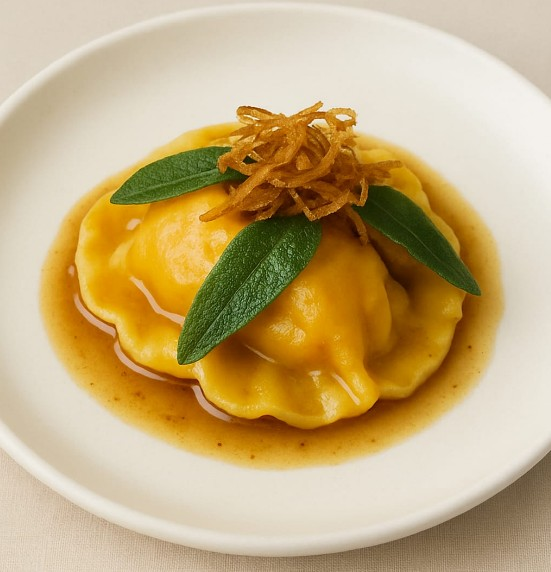
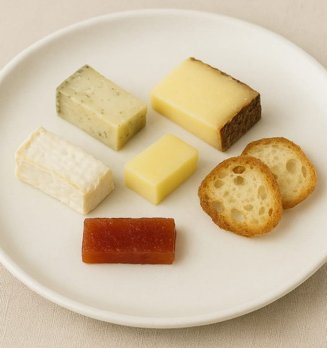

Le Menu Gastronomique
Close X
Menu Dégustation – Chef’s Tasting Menu
(7 Courses, with Wine Pairing Optional)
Amuse-Bouche
Oyster with Champagne Foam & Lemon Caviar
A delicate start with Gillardeau oyster, finished with citrus pearls and a whisper of champagne air
Entrée
Foie Gras de Canard Mi-Cuit, Brioche Maison
Served with rhubarb compote, aged balsamic, and pistachio dust.
Poisson
Bar de Ligne à la Vapeur, Bouillon de Cresson
Line-caught sea bass, watercress broth, and fingerling potatoes confit.
Viande
Filet de Veau Rosé, Jus aux Morilles
Pink veal tenderloin, morel jus, wild asparagus, and pomme purée with truffle oil.
Fromage Affiné
A selection of aged French cheeses from affineur Xavier, with seasonal accompaniments.
Pré-Dessert
Granité au Citron de Menton, Meringue Croustillante
A palate cleanser of Menton lemon ice with crisp meringue.
Mignardises
Assortment of handmade petits fours:
Canelé, pâte de fruit, macaron, chocolate truffle.
Menu Dégustation Végétarien – Chef’s Tasting Menu
(7 Courses, with Wine Pairing Optional)
Amuse-Bouche
Chou-fleur Rôti, Crème de Noisette et Truffe
Roasted cauliflower floret with hazelnut cream and black truffle shaving.
Entrée
Tarte Fine aux Tomates Anciennes, Fromage de Chèvre
Heirloom tomato tart with goat cheese mousse, basil oil, and puff pastry.
Soupe
Velouté de Topinambour, Noix de Pécan Caramélisées
Jerusalem artichoke velouté, topped with caramelized pecans and chive oil.

Plat Principal
Ravioles de Courge, Beurre de Sauge
Handmade squash ravioli with brown butter and sage, garnished with crispy shallots.

Fromage Affiné
Curated selection of artisanal French cheeses (vegetarian rennet), with fig chutney and sourdough crisps.
Pré-Dessert
Sorbet de Pomme Verte, Gelée de Verveine
Green apple sorbet with a delicate verbena jelly.
Dessert
Tarte au Chocolat et Praliné, Crème Légère au Café
Dark chocolate and hazelnut tart with a light coffee cream.